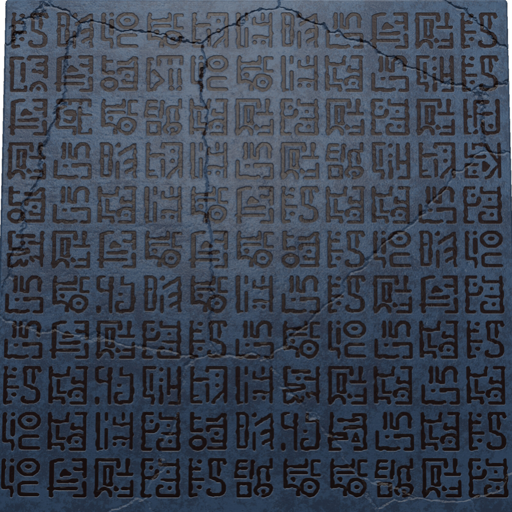
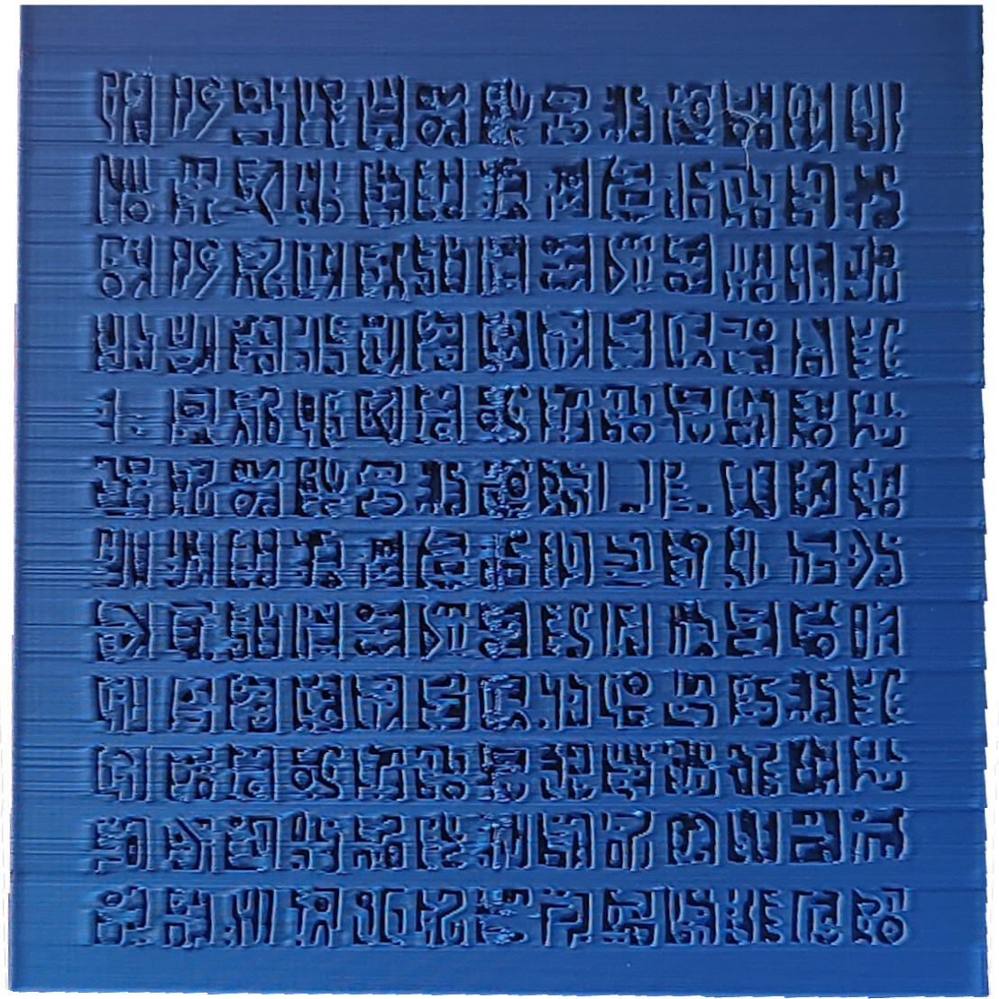
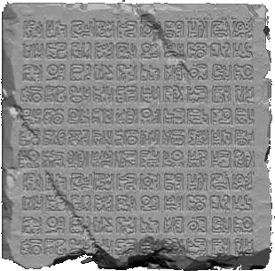

Six tablets, half-buried. Scroll closer and the stone starts to speak — hover to see the marks before the meaning.
▾ descend ▾
Long before any of this had a name, there was a cousin's PC in the countryside and whatever game happened to be installed. Didn't know it yet, but that was the beginning.

A lesson on how hard drives work turned into an unsupervised teardown of the family computer. The read/write arm didn't survive. Neither did the drive — but the habit of taking things apart stuck.
A2D Channel led to PCMR. PCMR led to Linus Tech Tips. Linus Tech Tips led to five more channels after that. What started as curiosity turned into a genuine knowledge goldmine.

Set out for CompTIA A+ in the first year of college, learning from Mike Myers and Steve Nicholson without realizing there were two full exams hiding inside one certification. Core 1 fell on June 12, 2025. Core 2 followed on September 17. After returning to Insightz Technology as a Security Analyst, Network+ was completed on March 8, 2026 — this time because the job actually needed it.
Kali and Ubuntu came and went, both broken more than once, neither built for gaming. Then came the year Linux got serious about it — and Bazzite ran Forza Horizon 6 better than Windows ever did. rEFInd got a One Piece theme and secure boot to match. The switch stuck.
A doomscroll, a reel from @codegirl.megha, and a single HTML file holding Luffy's Gear 5 awakening — images and all, base64-encoded, freely shared on GitHub. That was the spark. Everything since has been built from there.
Six tablets recovered. The rest of the site is still being excavated.